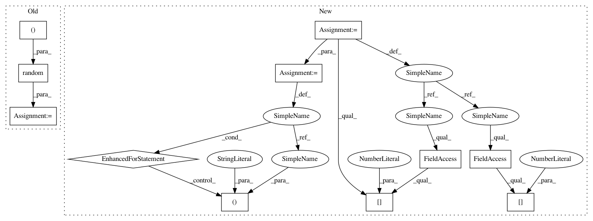

da42c137d164ab56a1f1919c8f0ee21e6172f120,cde/evaluation/GoodnessOfFit.py,GoodnessOfFit,hellinger_distance_monte_carlo,#GoodnessOfFit#Any#Any#,134
Before Change
if y is None:
y = np.random.random(size=(n_samples, self.estimator.ndim_y))
assert y.ndim == 2 and y.shape[1] == self.estimator.ndim_y
P = self.probabilistic_model.pdf
Q = self.estimator.predict
After Change
assert x.ndim == 2 and x.shape[1] == self.estimator.ndim_x
distances = np.zeros(x.shape[0])
for i in range(x.shape[0]): // iterate over x values to condition on
P = self.probabilistic_model.pdf
Q = self.estimator.predict
samples = stats.cauchy.rvs(loc=0, scale=2, size=(n_samples, self.estimator.ndim_x))
f = _multidim_cauchy_pdf(samples, loc=0, scale=2)
p = np.sqrt(P(x[i,:], samples))
q = np.sqrt(Q(x[i,:], samples))
r = (p - q)**2
distances[i] = np.sqrt(np.mean(r / f)/2)
assert distances.ndim == 1 and distances.shape[0] == x.shape[0]
return distances
In pattern: SUPERPATTERN
Frequency: 3
Non-data size: 11
Instances
Project Name: freelunchtheorem/Conditional_Density_Estimation
Commit Name: da42c137d164ab56a1f1919c8f0ee21e6172f120
Time: 2018-03-20
Author: jonas.rothfuss@gmx.de
File Name: cde/evaluation/GoodnessOfFit.py
Class Name: GoodnessOfFit
Method Name: hellinger_distance_monte_carlo
Project Name: ContextLab/hypertools
Commit Name: 878be5344a7cca66858ba82981713099bde5f12f
Time: 2016-12-19
Author: andrew.heusser@gmail.com
File Name: python/examples/hypertools_demo-PPCA.py
Class Name:
Method Name:
Project Name: ContextLab/hypertools
Commit Name: edaf3f4c2303b8c0364266d092335733b66ffbd0
Time: 2016-12-19
Author: andrew.heusser@gmail.com
File Name: python/examples/hypertools_demo-PPCA.py
Class Name:
Method Name:
Project Name: freelunchtheorem/Conditional_Density_Estimation
Commit Name: da42c137d164ab56a1f1919c8f0ee21e6172f120
Time: 2018-03-20
Author: jonas.rothfuss@gmx.de
File Name: cde/evaluation/GoodnessOfFit.py
Class Name: GoodnessOfFit
Method Name: hellinger_distance_monte_carlo